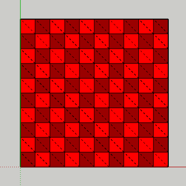

Class: Sketchup::EntitiesBuilder
- Inherits:
-
Object
- Object
- Sketchup::EntitiesBuilder
Overview
Like Geom::PolygonMesh there is minimal validation checks made on the input to the creation of the geometry. Vertices are de-duplicated and edges sharing the same vertices will be de-duplicated. But no intersection of overlapping entities is made. It leaves a higher responsibility on the API user to produce valid geometry.
While using Sketchup::Entities#build it is important to not add or remove vertices by other means of the builder. Also don't modify the position of the vertices in the Entities container geometry is added to. Doing so can break the vertex-cache that de-duplicates the vertices.
The EntitiesBuilder is an interface to generate bulk geometry with performance in mind.
This is particularly useful for importers where the geometry is already well defined and one wants to recreate it without further processing.
Before the Entities Builder was introduced there were two ways of adding geometry; the add_* methods of Entities and Geom::PolygonMesh.
The former is slow as the methods perform intersection, splitting and merging of overlapping geometry. This is useful when creating tools similar to the Line and Rectangle tool.
Geom::PolygonMesh is fast, but it doesn't provide granular control per face or edge added.
Entities Builder is similar to Geom::PolygonMesh in speed, but with the flexibility of Entities's add_* methods.
(See “Creating a triangulated grid” example)

Instance Method Summary # collapse
- #add_edge(*args) ⇒ Sketchup::Edge (also: #add_line)
- #add_edges(*args) ⇒ Array<Sketchup::Edge, nil>
- #add_face(*args) ⇒ Sketchup::Face
-
#entities ⇒ Sketchup::Entities
The Entities collection the EntitiesBuilder will add the geometry to.
-
#valid? ⇒ Boolean
Indicates whether the builder object is valid and can be used.
-
#vertex_at(position) ⇒ Sketchup::Vertex?
Finds an existing Vertex for the given position, otherwise returns
nil.
Instance Method Details
↑ #add_edge(point1, point2) ⇒ Sketchup::Edge #add_edge(points) ⇒ Sketchup::Edge Also known as: add_line
Does not split intersecting faces or edges.
Adds a Sketchup::Edge to the #entities collection.
↑ #add_edges(points) ⇒ Array<Sketchup::Edge, nil> #add_edges(*points) ⇒ Array<Sketchup::Edge, nil>
Does not split intersecting faces or edges.
Adds a continuous set of Sketchup::Edge's to the #entities collection.
↑ #add_face(outer_loop) ⇒ Sketchup::Face #add_face(*outer_loop) ⇒ Sketchup::Face #add_face(outer_loop, holes: inner_loops) ⇒ Sketchup::Face #add_face(*outer_loop, holes: inner_loops) ⇒ Sketchup::Face
↑ #entities ⇒ Sketchup::Entities
The Sketchup::Entities collection the Sketchup::EntitiesBuilder will add the geometry to.
↑ #valid? ⇒ Boolean
Indicates whether the builder object is valid and can be used.
A builder object is only valid within the scope of the block given to Sketchup::Entities#build.
When this return false, calling any other method on the builder will raise an error.
↑ #vertex_at(position) ⇒ Sketchup::Vertex?
Finds an existing Vertex for the given position, otherwise returns nil.